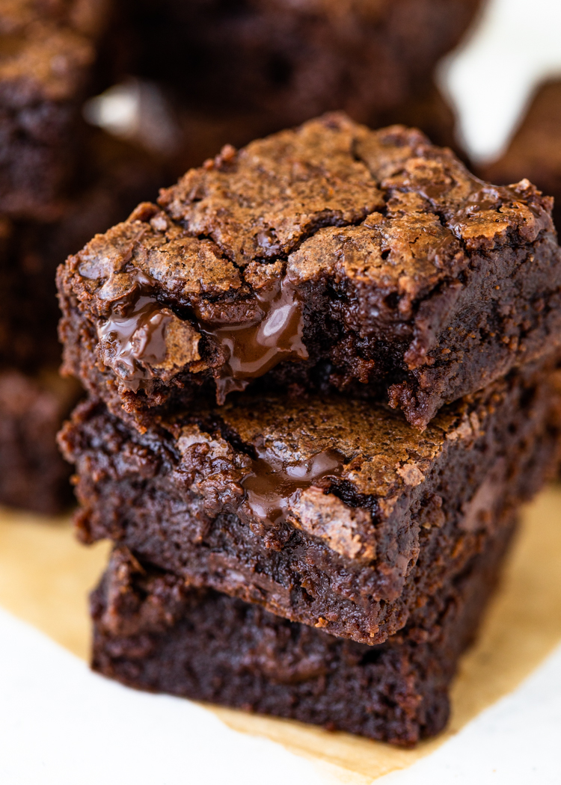

Brownie Recipe

Ingredients
- baking spray
- 2 cups of white sugar
- 1 1/4 cups all-purpose flour
- 1 cup unsalted butter, melted
- 4 large eggs, room temp
- 1/2 cup cocoa powder
- 1 teaspoon vanilla extract
- 1/2 teaspoon baking powder
- 1/2 teaspoon salt
- 1/2 cup walnut halves
How to Store Easy Brownies
Store the brownies in an airtight container for 3 to 4 days at room temperature or for up to one week in the refrigerator.
You can freeze brownies for up to three months.
Directions
- Gather all ingredients.
- Preheat the oven to 350 degrees F (175 degrees C). Grease a 9x13-inch pan with baking spray.
- Whisk sugar, flour, melted butter, eggs, cocoa powder, vanilla, baking powder, and salt in a large bowl until combined.
- Spread the batter into the prepared pan.
- Decorate with walnut halves.
- Bake in the preheated oven until top is crinkled and a toothpick comes out with a few moist crumbs, about 20 to 30 minutes.
- Let cool completely in the pan on a wire rack before slicing into squares. Enjoy!